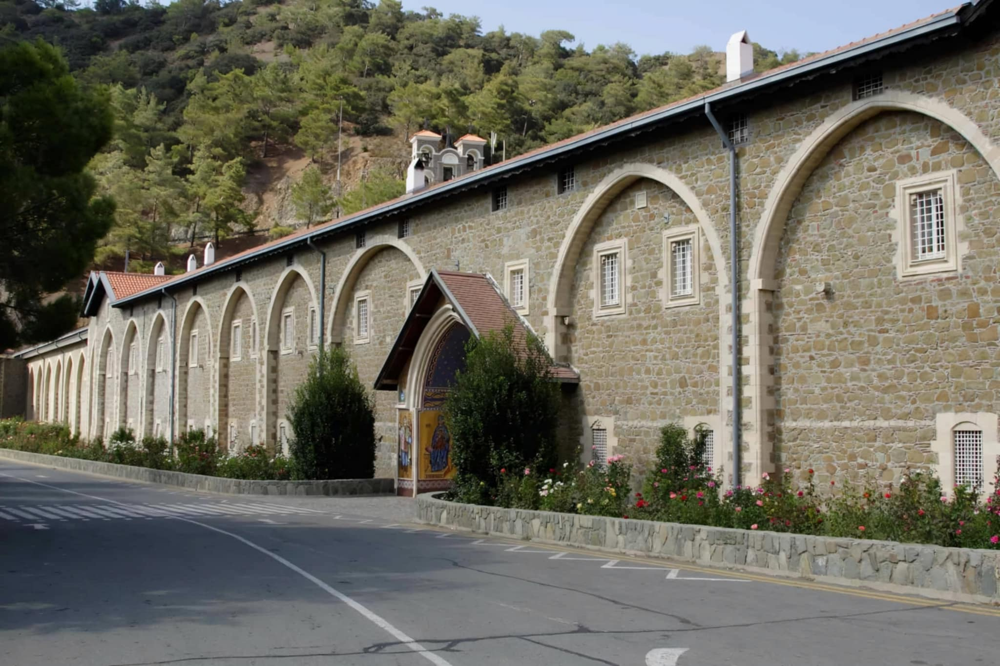
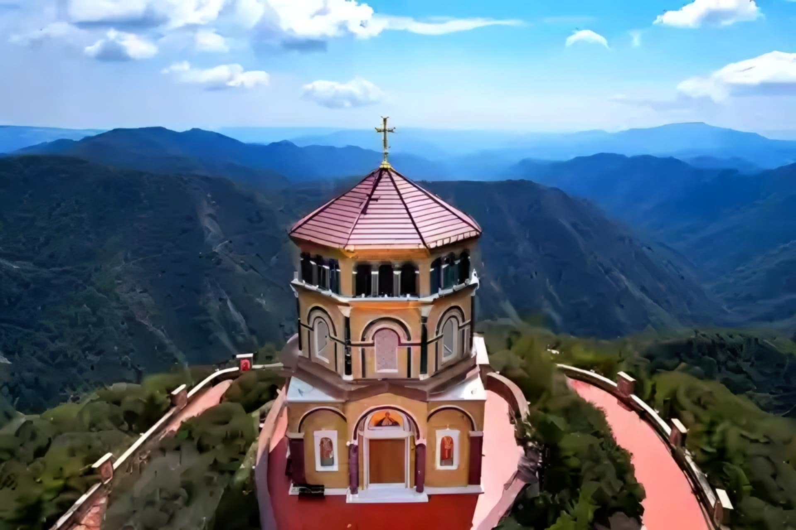
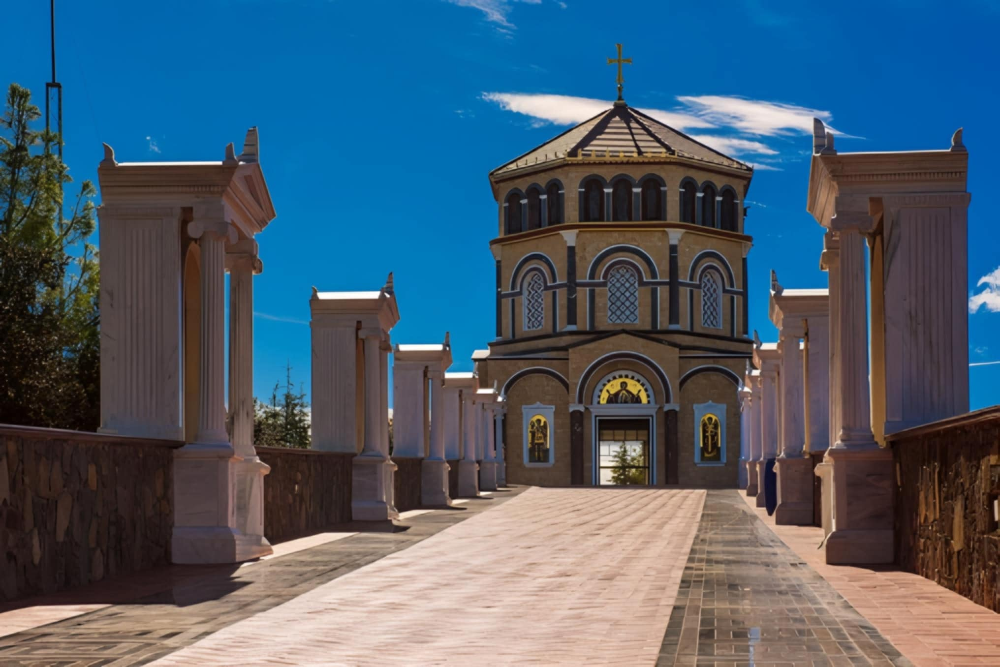
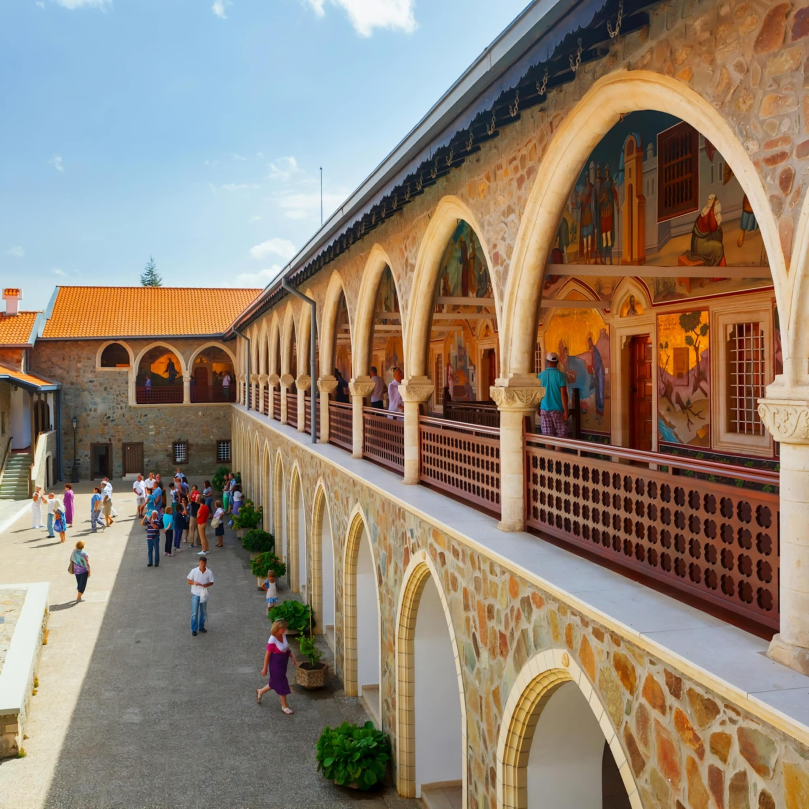
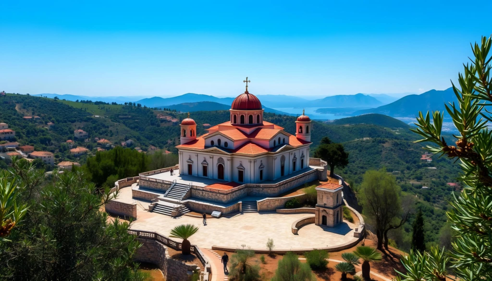
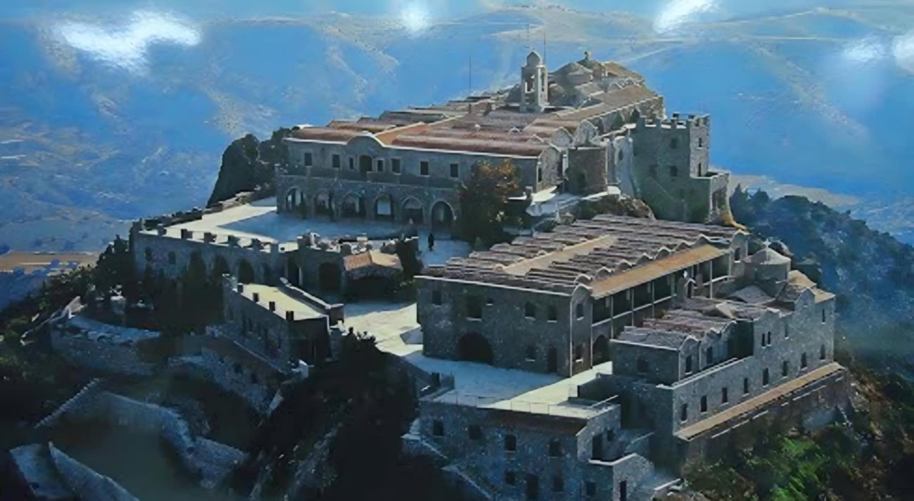
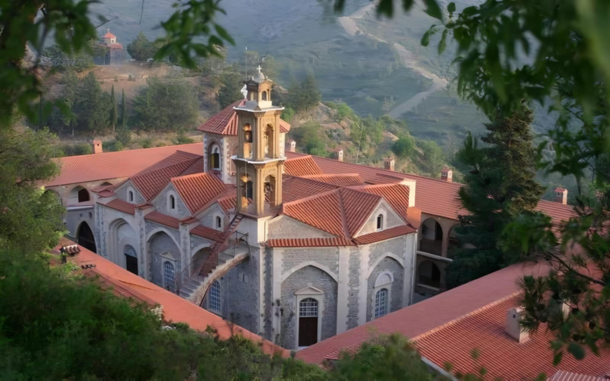
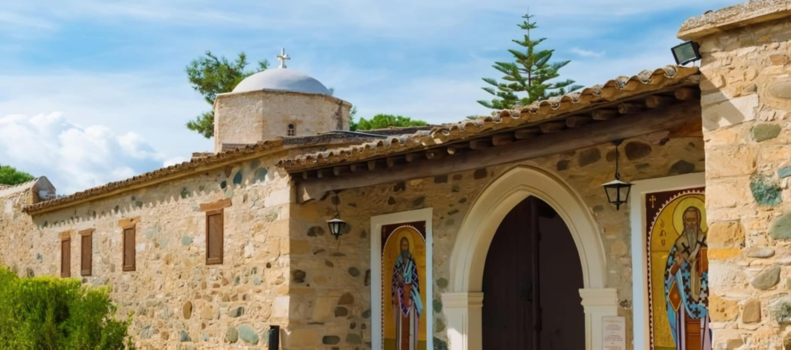

CYPRUS ORTHODOX
- Home
- CYPRUS ORTHODOX
CYPRUS ORTHODOX
Unique temples and ancient monasteries, monastic life, miraculous icons and healing water –
touch the spiritual heart of island
Choose one of the great excursions to the holy treasury of Cyprus:
- Following in the Footsteps of the Holy Apostles
- The Way of Healing
- The Living Bible
About
Cyprus is an amazing island, which is sometimes called the "island of saints". It was here, after the crucifixion of Christ, that his disciples, the Holy Apostles Barnabas, Paul and Mark, came to bring the faith of Christ to the souls of people. Here, having become the first bishop of Cyprus, preached Saint Lazarus of the Four Days, resurrected by the Lord Jesus Christ, friend of God. Even the Virgin Mary herself visited here. And during the times of iconoclasm, many holy relics of Christianity found salvation on the island.
On excursion you will visit the most revered holy places of Cyprus and see unique, dissimilar temples and holy monasteries hidden from prying eyes. You will learn about legends and miracles that have happened, and perhaps, having touched the miraculous shrines of Cyprus, you yourself will become witnesses of a miracle.
Most of the route will run through the mountainous part of Cyprus, which is very different from the coastal zone - pine forests, mountain rivers and waterfalls, colorful villages, clean air and stunning views.
Excursion: Following in the Footsteps of the Holy Apostles
- Troodos Mountains
- Omodos Village
- Church of the Holy Cross
- Trooditissa Monastery in which the belt of the Blessed Virgin Mary is stored, giving the miracle of childbirth.
- Pedoulas Village
- Church of Archangel Michael
- Traditional Tavern
- Kykkos Monastery
- Panoramic Platforms
Excursion: The Way of Healing
- Monastery of St. Thekla
- Church of St. Cyprian and Justina
- Monastery of St. Iraklidios
- Monastery of Martyr Panteleimon
- Stavropegic Monastery of Machairas
Excursion: The Living Bible
- Stavrovouni Monastery
- Monastery of St. Thekla
- Cave Church of the Holy Mother of God Chrysospiliotissa
- Church of Cyprian and Justina
- Monastery of John the Baptist
Information about the most significant places
1. KYKKOS MONASTERY
Kykkos Monastery, nestled high in the Troodos Mountains, is the most famous and wealthiest monastery in Cyprus. Founded in the 11th century, it boasts a rich history and is home to a priceless collection of religious icons, including the miraculous icon of the Virgin Mary, painted by the Apostle Luke himself. The monastery's location offers visitors breathtaking panoramic views of the surrounding countryside, making it a must-visit for those seeking both spiritual nourishment and natural beauty.
Opening hours: June to October: daily 10 a.m. - 6 p.m.; November to May: 10 a.m. - 4 p.m. (Museum of the Kykko Monastery). Entrance fee: 5 €.





2. Stavrovouni Monastery
Perched atop a hill and offering stunning views, Stavrovouni Monastery is one of the oldest monasteries in Cyprus, dating back to the 4th century. Founded by Saint Helena, the mother of Emperor Constantine the Great, this male-only monastery is known for its unique traditions and strict restrictions on visitors. Despite its strictness, the monastery's fascinating history and captivating scenery make it well worth a visit for those eager to delve deeper into the island's spiritual heritage.

3. Machairas Monastery
Located in the heart of the picturesque Machairas Forest, Machairas Monastery is steeped in legend and lore. Founded in the 12th century after the miraculous discovery of an icon of the Virgin Mary, this tranquil haven offers visitors a chance to explore its serene surroundings and uncover the stories that have shaped its existence.

4. Monastery of Agios Irakleidios (Herakleidios)
The monastery is located on the outskirts of Politiko, 23 km from Lefkosia and was founded in the year 400. For several years it has been inhabited again by nuns, who planted picturesque flower gardens here. The church is decorated with Byzantine frescoes.

5. Monastery Chrysorrogiatissa
The monastery is located about 40 km from Pafos on a mountain slope. It was founded in 1152 by the hermit Ignatius, who was led by a light to a hidden icon. The monastery is known for its wines pressed here and its icon restoration workshop.
6. Monastery of Saint Neofytos
The monastery with the living cave of the Cypriot saint is located 10 km from Pafos. It was founded in 1170 by the hermit and scholar Neofytos, who had your hermitage painted with pious pictures. The frescoes of the monastery are among the most beautiful of the island. The bones of the saint are in the monastery church from the 15th century.
Monastic Art and Architecture in Cyprus
The monasteries of Cyprus are treasure troves of Byzantine art and iconography, showcasing masterpieces that have withstood the test of time. These sacred institutions also exhibit a diverse array of architectural styles, reflecting the island's rich cultural history and the various influences that have shaped it over the centuries.
You have to know that:
- Cyprus is called the "island of saints". A great number of saints the Cypriot land grew. Significant figures as Saint Lazarus the Four Days, friend of God, the Apostles Barnabas, Paul and Mark preached here. This island has a rich spiritual history and is considered as one of the holiest places on earth.
- The miraculous icon of the Virgin Mary of Kykkos is kept in Cyprus in the famous Kykkos Monastery. This monastery is one of the most significant shrines of Orthodoxy and is known for its amazing history.
- Cyprus is a true paradise for pilgrims. There are about 1,500 churches and more than 30 active monasteries on the island, making it a center of spiritual life and faith.
- Holy relics and icons were saved during the iconoclasm. During this historical period, many relics found refuge in Cyprus, which adds historical significance to the island.